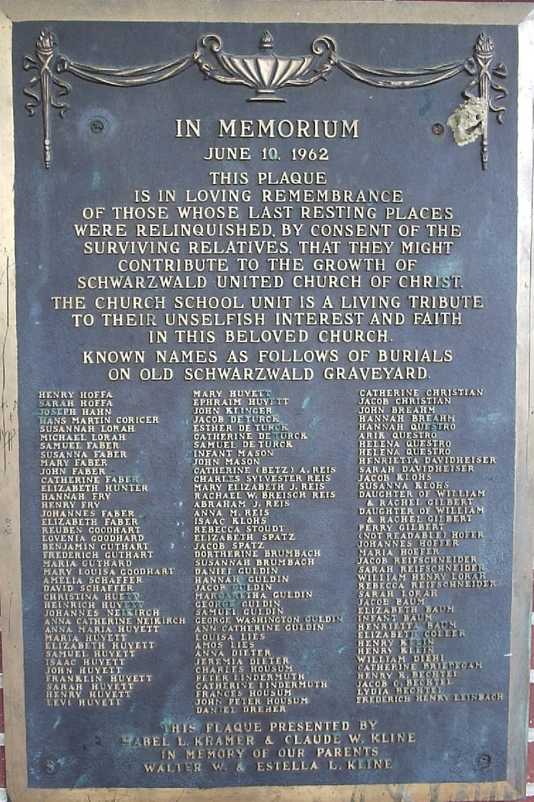

married 04 Jun 1799
Johannes "John" HOFFER
born 29 May 1777
died 13 Oct 1853
born 29 May 1777
died 13 Oct 1853
Gertraud KLEIN
born 15 May 1777
died 24 Oct 1827
born 15 May 1777
died 24 Oct 1827
Children of Johannes HOFFER and Gertraud KLEIN
George Klein HAFER
born 14 Jun 1800
died 02 Mar 1879
born 14 Jun 1800
died 02 Mar 1879
Daniel Klein HOEFFER
born 14 Aug 1802
died 19 Jun 1853
born 14 Aug 1802
died 19 Jun 1853
William Klein HAFER
born 16 Oct 1804
died 24 Jun 1872
born 16 Oct 1804
died 24 Jun 1872
Sarah Klein HAFER
born 24 May 1807
died 19 Apr 1890
born 24 May 1807
died 19 Apr 1890
John K. HAFER
born 11 Oct 1812
died 18 Aug 1895
born 11 Oct 1812
died 18 Aug 1895
Matthias Klein HAFER
born 10 Sep 1816
died 31 Oct 1898
born 10 Sep 1816
died 31 Oct 1898
Henry Klein HAFER
born 02 Dec 1819
died 27 Nov 1903
born 02 Dec 1819
died 27 Nov 1903
Julianna Klein HAFFER
born 05 Aug 1821
died 13 May 1906
born 05 Aug 1821
died 13 May 1906
Levi HAFER
born 06 Jan 1823
died 19 Jul 1896
born 06 Jan 1823
died 19 Jul 1896
